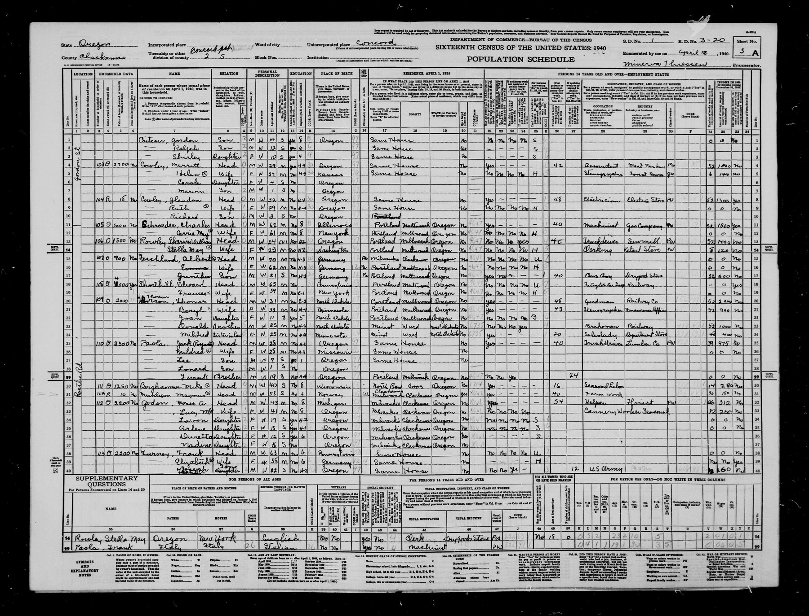
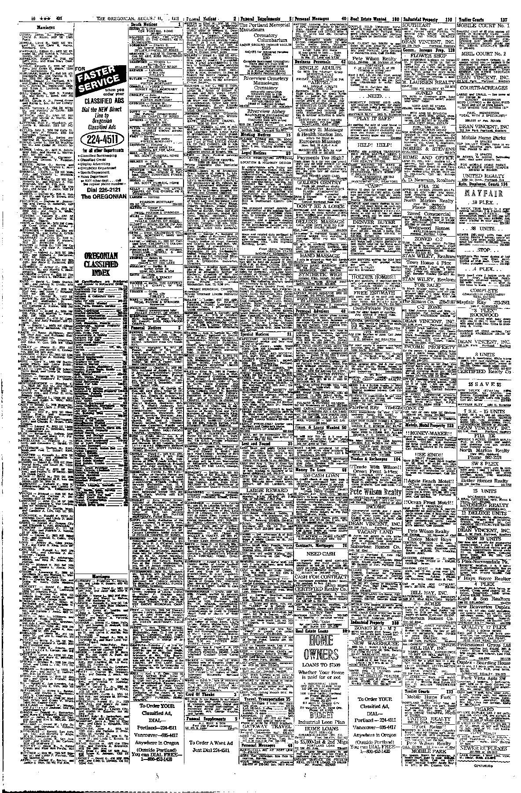

Estella May Alderson 1916–2008
Peter's grandmother.
Also recorded as Phillis May Barns (her birth name: WA birth certificate 146-1916-005906); Phyllis (family name); Estella Hall; Phillis May Barns.
Estella May Alderson was born on 5 May 1916 in Seattle, King County, Washington, United States2,3,4,5, the daughter of John Smith and Irene Mary Barnhart, and the adopted daughter of Winter Scott Alderson and Carrie May Newman3,23,24,25. She married Charles Henry Hall on 11 May 1946 in Vancouver, Clark County, Washington, United States26,27,28. She married William S. Rowley on 30 Dec 1933 in Vancouver, Clark County, Washington, United States29. She died on 6 Jun 2008 in San Diego, California, United States5,19,20 and was buried at Fairhaven Memorial Park, Santa Ana, Santa Ana, California, United States (according to an online family tree)5.
Family
- Parents
- Winter Scott Alderson 1866–1933 and Carrie May Newman 1878–1970 and John Smith and Irene Mary Barnhart 1900–1971 (adopted) adoptive / probable
- Husband
- Charles Henry Hall 1920–2001 · married on 11 May 1946 in Vancouver, Clark County, Washington, United States26,27,28
- Children
- Kathleen Diane Hall b. 1947 documented
- James A. Hall b. 1959 documented
- Charles Hall Jr. documented
- Steve Hall b. 1949 documented
- Dale Hall b. 1952 documented
- David Hall b. 1952 documented
- Susan Hall b. 1960 documented
- Husband
- William S. Rowley b. 1914 · married on 30 Dec 1933 in Vancouver, Clark County, Washington, United States29
Life events
| Event | Date | Place and details |
|---|---|---|
| Born | 5 May 1916 | Seattle, King County, Washington, United States2,3,4,5 |
| Born | 5 May 1916 | Seattle, King County, Washington, United States registered as Phillis May Barns; mother Irene Barns, father 'John Smith'; Seattle certificate 1743 (or 1763)1 |
| Lived | 21 Jan 1920 | Portland, Multnomah County, Oregon, United States5,7 |
| Lived | 7 Apr 1930 | Portland, Multnomah County, Oregon, United States8 |
| Married | 30 Dec 1933 | with William S. Rowley Vancouver, Clark County, Washington, United States29 |
| Note | 4 Jan 1934 | Vancouver, Clark County, Washington, United States Applied for a marriage licence at Vancouver, Clark County, Washington (published 4 January 1934; the couple married on 30 December 1933 per Clark County marriage records): William S. Rowley, age 19, residing at 5003 Southeast Fifty-eighth Avenue, Portland, and Miss Estelle M. Alderson, age 17,…21 |
| Lived | 1935 | Portland, Multnomah County, Oregon, United States According to an online family tree5 |
| Lived | 12 Apr 1940 | Concord, Oregon, United States5,9 |
| Lived | 12 Mar 1944 | Milwaukie, Clackamas County, Oregon, United States10 |
| Married | 11 May 1946 | with Charles Henry Hall Vancouver, Clark County, Washington, United States26,27,28 |
| Lived | 1949 | United States According to an online family tree5 |
| Lived | 6 Apr 1950 | Portland, Multnomah County, Oregon, United States11,12 |
| Lived | Jun 1950 | Portland, Multnomah County, Oregon, United States According to an online family tree5 |
| Lived | 9 Aug 1970 | Akron, Ohio, United States5,13,14 |
| Lived | bet 1981 and 1993 | Palo Alto, California, United States15 |
| Lived | 2001 | Orange, California, United States16 |
| Died | 6 Jun 2008 | San Diego, California, United States5,19,20 |
| Origin | Seattle, King County, Washington, United States According to the family's 2015 tree6 | |
| Lived | Mountain View, California, United States17 | |
| Lived | California, United States18 | |
| Buried | Fairhaven Memorial Park, Santa Ana, Santa Ana, California, United States According to an online family tree5 | |
| Note | Her BIOLOGICAL direct maternal line (mtDNA), carried by Peter via Kathleen: Mitotree H1c114 (haplotype F9851619, no private variants). H1c114 is defined by T146C! and T1738C; it branched from H1c ~3250 BCE, TMRCA ~1 BCE (95% 509 BCE–413 CE). Only 16 tested descendants; origins Scotland, United…22 |
Possible records (not confirmed)
Records that may concern her, but don't settle it: an initial and a surname only, a family recollection, or a reading that needs a second look. Each links to the record.
- Parents: LEAD for her biological family. Family Finder match 'a DNA match' (61 cM, longest block 24 cM, 3rd–5th cousin) is ALSO an mtFull match at GD 1 inside H1c114, so he shares Estella's rare maternal haplogroup. His listed surnames: Brown (Pennsylvania; Tulare, CA), Curry (Tulare, CA), Langdon (Tulare, CA), Tomlin, Jefferson, Reed, Taffe, Hubbard (California); maternal EKA given as Marjorie…30 FF + mtDNA overlap is suggestive, not proof. Needs Kathleen's FF test to confirm the cluster is through her (and Charles Hall's side excluded), then trees for Hubbard/Upper/Leonard.
- Parents: HYPOTHESIS: birth mother may be a daughter (b. c.1875–1892) of William Alexander Walker (1843 Woodstock ON – 1930 Bemidji MN) and Jean R. Arbuckle (1847 Carmunnock, Lanarkshire – 1907 Bemidji). Peter's top non-Baltic FF matches (71, 61, 53 cM) descend from two of their daughters, Jane Ann Walker (m. Upper; d. 1965 Saskatoon) and Edith Ione Walker (1889 Bemidji – 1958 Victoria BC; m. Leonard,…31 cM amounts fit 2C1R/3C via a Walker–Arbuckle daughter, but the cluster's side (Estella vs Charles Hall) is unproven until Kathleen tests, and the Walker–Arbuckle children have not been enumerated.
- Estella's birth mother was "Irene Barns" = Irene Mary Barnhart (b. 16 Aug 1900 Lynden, Whatcom Co., WA; FamilySearch LB8P-85J), daughter of Phillip Barnhart and Margaret A. Walker, who was a daughter of William Alexander Walker and Jean Arbuckle. The father on the index card, "John Smith", is presumably a placeholder.22,30,31,32,33 WA birth index: Phillis May Barns, 5 May 1916, Seattle, mother Irene Barns, father John Smith: the exact date and city of Estella's delayed certificate. Estella was known as Phyllis, and her middle name was May. "Barns" is a plausible short form of Barnhart; Irene's dead father was Phil and her sister was Phyllis. Open question.
Records








Open questions
- A formal court adoption (Oregon or Washington) Unlikely
- Birth mother = Irene Mary Barnhart (b. 16 Aug 1900 Lynden WA) Probably
- Birth mother = Irene F. Barnes (b. 12 Dec 1894 MN; Portland 1910) Unlikely
- Birth mother = Ruth Irene Barnes (b. Dec 1896 OR; Portland 1900) Unlikely
- Estella = "Phillis May Barns", b. 5 May 1916 Seattle Confirmed
- Other WA girls born 3–7 May 1916 (near-misses) Unlikely
- SS-5: the parents Estella herself named Open
- Walker × Arbuckle as Estella's birth family (the DNA side) Probably
- Which Walker–Arbuckle line: Margaret (Barnhart), Olive Kirwin, Edith Ione Leonard Possibly
Sources
- Phillis May Barns, 5 May 1916, DGS 101140005 image 721, rec. 76; DGS 101140006 image 586, rec. 7.
652 Barns, Irene (M) Phillis May Barns (C) Seattle John Smith (F) 5-5-16 F W 1763 | 530 Smith, John Phillis May Barns Seattle Irene Barns 5-5-16 F W 1743
State birth index, two cards. (1) Filed under the mother: '652 Barns, Irene (M) / Phillis May Barns (C) | Seattle / John Smith (F) | 5-5-16 F W | 1763'. (2) Filed under the father: '530 Smith, John / Phillis May Barns | Seattle / Irene Barns | 5-5-16 F W | 1743'. Seattle certificate no. 1743 or 1763: the two cards disagree. Card 2 is clearer and reads 1743 (my reading; Claude Opus on a tight crop: 1, 7, 4 high certainty, final 3 moderate). Card 1 is blurred; my reading, two independent Claude Haiku passes and Claude Opus all give 1763.
- Peter's tree, danenberg.sql, 2007–2015, personae 119, birth.
- Estella - Newman - Alderson - Et Al., doh_db_00205057; Vol. 26, State File No. 342.
Estella May Alderson ... Female ... May 5, 1916 ... Seattle ... King ... Winter Scott Alderson ... Carrie May Newman ... * Affiant states she is the mother of the child stated. ** Affiant states she is the older sister of the child and lived in Seattle with her parents at the time of the birth. ... I certify that no prior certificate has been found for this registrant ... Filed at Seattle, Washington, on April 7, 1952
Delayed certificate filed 7 Apr 1952 (Vol. 26, State File No. 342). It names Winter Scott Alderson (b. Oregon, age 50) and Carrie May Newman (b. New York, age 38) as parents. Supporting evidence: (1) affidavit of Carrie May Schroeder, 18 Mar 1952, 'Affiant states she is the mother of the child stated'; (2) affidavit of Mrs. Lola Webster, 25 Mar 1952, 'Affiant states she is the older sister of the child and lived in Seattle with her parents at the time of the birth'; (3) Portland Public Schools transcript, 1922–1923 ('Scott Alderson', 'May Alderson'). Registrar's certification: 'no prior certificate has been found for this registrant'. Signed by Estella May Hall, sworn at Portland, 13 Mar 1952.
- Certificate of Live Birth: Phillis May Barns, State file number 146-1916-005906; filed 1916-05-12; issued 2026-10-22.
PHILLIS MAY / BARNS / MAY 05, 1916 04:30 AM / SEATTLE, KING COUNTY, WASHINGTON / IRENE BARNS / WASHINGTON / 18 YEARS / JOHN SMITH / WASHINGTON / 20 YEARS / MAY 12, 1916
Original birth certificate, state file no. 146-1916-005906, filed 12 May 1916: Phillis May Barns, female, born 5 May 1916 at 4:30 am, Seattle; facility unknown. Mother 'Irene Barns', born Washington, age 18. Father 'John Smith', born Washington, age 20. The state still issues it in the birth name (never amended for an adoption). See certificate-1916.md.
- FamilySearch Family Tree: Estella May Alderson (L51K-T7N).
- Peter's tree, danenberg.sql, 2007–2015, personae 119, provenance.
- S-fs-M487-BM7.
Alderson, Scott W | Head ... Oregon | England | United States; May C. | Wife ... 41 ... New York; Stella M. | Daughter | F W 4 S | Washington | Oregon | New York
1920 census, ED 58, sheet 1A, line 13: 'Stella M.', Daughter, F W 4, b. Washington; father b. Oregon; mother b. New York. Household of Scott W. Alderson (54) and May C. (41). Next door (line 3) is the adoptive brother Elmer E. Alderson, 24, with wife Pearl L. (née Quiner) and two infant sons.
- S-fs-XCSS-HWY.
52nd Ave. S.E. | 5003 | 60 | 61 | Alderson, Winter S. | Head | O | 3500 | No | No | M | W | 64 | M | 27 | No | Yes | Oregon | England | Illinois ... Carrie M. | Wife-H | F | W | 51 | M | 14 | No | Yes | New York | New York | New York ... Stella M. | Daughter | F | W | 13 | S | Yes | Yes | Washington | Oregon | New York
1930 census, ED 26-271, sheet 3A, line 7: 'Stella M.', Daughter, F W 13, b. Washington; father b. Oregon; mother b. New York. Household of Winter S. Alderson (64; age at first marriage 27) and Carrie M. (51; age at first marriage 14) at 5003 52nd Ave. S.E. Next door (line 2, at 5704 52nd Ave. S.E.) is Elmer E. Alderson with his second wife Katherine L.
- 1940 US Census, Concord Precinct 25, Clackamas County, Oregon, ED 3-20, sheet 5A, lines 11–14 (and Supplementary Line 14).
Gordon St | 106 | O | 1500 | No | Rowley, (Sherwin) William | Head | M | W | 24 | M | No | H-2 | Oregon | Portland, Multnomah, Oregon | Yes | 40 | Truckdriver | Sawmill | PW | 52 | 1400 | No / [Rowley] Stella May (x) | Wife | F | W | 23 | M | No | H-2 | Washington | Portland, Multnomah, Oregon | H | Clerking | Retail Store | PW | 8 | 120 | No [Suppl. Line 14: Rowley, Stella May | Father: Oregon | Mother: New York | English | SS: Yes | Clerk | Drygoods Store | PW | Married more than once: No | Age at first marriage: 18 | Children ever born: 0]
1940 US Census (enumerated 12 April 1940, Concord Precinct 25, Clackamas County, Oregon, ED 3-20, sheet 5A, line 14, on Gordon St., household #106, owned home worth $1,500): Stella May Rowley (informant marked (x)), wife of (Sherwin) William Rowley (24, truckdriver at sawmill), age 23, married, completed 2nd year of high school (H-2), born in Washington, resided in Portland, Multnomah County, Oregon on 1 April 1935, worked 8 weeks in 1939 earning $120 clerking in a retail store, living immediately next door to her adoptive parents Charles Schroeder (62, machinist at gas company) and Carrie May Schroeder (61) at household #105 (lines 11–12). Supplementary Question Line 14 records: father's birthplace Oregon, mother's birthplace New York, mother tongue English, Social Security account Yes (deductions from 1/2 or more of wages), usual occupation Clerk in Drygoods Store (private wage worker), married more than once No, age at first marriage 18, number of children ever born 0.
- Obituary: Elmer E. Alderson, Oregon Journal (Portland, Oregon), 14 March 1944, p. 7.
parents, Mr. and Mrs. Charles G. Schroeder, •Milwaukie; sisters, Mrs. Lola Webster, Newport, and Mrs. Stella Rowley, Milwaukie, and four grandchildren.
Translation: parents, Mr. and Mrs. Charles G. Schroeder, Milwaukie; sisters, Mrs. Lola Webster, Newport, and Mrs. Stella Rowley, Milwaukie, and four grandchildren.
Residing in Milwaukie, Clackamas County, Oregon, as 'Mrs. Stella Rowley' in March 1944 at the death of her brother Elmer Ellsworth Alderson.
- 1950 US Census, Multnomah County, Oregon, ED 26-76, sheet 12, line 16.
—, Stella M. | Wife | W | F | 33 | Mar | [Seattle crossed out] Washington | H | no | no | no
1950 US Census (enumerated 6 April 1950, Multnomah County, Oregon, ED 26-76, sheet 12, line 16, at [address omitted]): Stella M. Hall, wife, age 33, married, keeping house; in Column 13 (birthplace) the enumerator first wrote 'Seattle', crossed it out, and wrote 'Washington' above it.
- 1950 US Census, Multnomah County, Oregon, ED 26-76, sheet 12, line 16, DigitalFilmNbr 108805908, ImageNbr 13, ImageFolder1950Census 43290879-Oregon-017326, SourcePageNbr 12, SourceLineNbr 16, HouseholdId 155.
Name: Steela M. Hall (Stella M Hall); RelationshipToHead: Wife; Gender: Female; Race: W; Age: 33 / 33 years; MaritalStatus: Married; Birth: 1917, Washington; Census: June 1950, Multnomah, Multnomah, Oregon, United States; SourcePageNbr: 12; SourceLineNbr: 16; HouseholdId: 155; OccupationCategory: H
Enumerated (original enumeration date 'Apri 6, 1950' (FamilySearch normalizes it to June 1950), house number [address omitted], ED 26-76) on sheet 12, line 16, household 155, as Wife, Female, race W, age 33, Married, born c. 1917 in Washington, OccupationCategory H, in household of Charles H. Hall (Head, age 29, born Washington, Deisel Mechanic at Freight Company) with children Kathleen D. Hall (Daughter, age 3, born Oregon) and Steven C. Hall (Son, age 0 days, born 1949 in Oregon).
- Funeral Notice for Carrie M. Schroeder, The Oregonian, 11 August 1970, p. 33, col. 4.
SCHROEDER — August 9, Carrie M., age 92, in Lebanon formerly of Portland, widow of the late Charles G. Schroeder; mother of Mrs. Lola West of Lebanon, Ore; Mrs. Stella Hall of Akron, Ohio. Funeral services Thursday 11 am Portland Memorial Mausoleum. JOST FUNERAL HOME, Lebanon, in charge.
Recorded as 'Mrs. Stella Hall of Akron, Ohio' in the 11 August 1970 Oregonian funeral notice for her mother Carrie M. Schroeder (died 9 August 1970 in Lebanon, Oregon, age 92, formerly of Portland, widow of the late Charles G. Schroeder; also survived by daughter Mrs. Lola West of Lebanon, Oregon).
- Death Notice: Schroeder — Carrie M., The Oregonian (Portland, Oregon), 11 August 1970, p. 34; and Oregon Journal, 11 August 1970, p. 24.
SCHROEDER — August 9, Carrie M-, age 92, In Lebanon formerly of Portland, widow of the late Charles G. Schroeder; mother of Mrs. Lola West of Lebanon, Ore; Mrs. Stella Hall of Akron, Ohio.
Translation: SCHROEDER — August 9, Carrie M., age 92, in Lebanon formerly of Portland, widow of the late Charles G. Schroeder; mother of Mrs. Lola West of Lebanon, Ore.; Mrs. Stella Hall of Akron, Ohio.
Residing in Akron, Summit County, Ohio, as 'Mrs. Stella Hall of Akron, Ohio' at the time of her adoptive mother Carrie May Schroeder's death on 9 August 1970.
- Stella M Hall, born 5 May 1916, Palo Alto & Upland, CA, Collection 1788, Record 407621461.
Name: Stella M Hall [Stella Hall]; Birth Date: 5 May 1916; Address: 4094 Villa Vis; Residence: Palo Alto, CA; Postal Code: 94306-3209; Second Residence Date: 1993; Second Address: 1447 Sunrise Cir S; Second Residence: Upland, CA; Second Postal Code: 91784-7316; Third Residence Date: 1981; Third Address: 4337 Cesano CT; Third Residence: Palo Alto, CA; Third Postal Code: 94306-4441; Fourth Residence Date: 1993; Fourth Address: 1447 Sunrise Cir S; Fourth Residence: Upland, CA; Fourth Postal Code: 91784-7316
Birth Date: 5 May 1916. Addresses: 4094 Villa Vis, Palo Alto, CA 94306-3209; 1447 Sunrise Cir S, Upland, CA 91784-7316 (1993); 4337 Cesano CT, Palo Alto, CA 94306-4441 (1981). All three addresses are identical to those of her husband Charles H Hall in record 1788:224868144.
- Charles Henry Hall obituary, Santa Ana, 16 Mar 2001.
Charles Henry Hall (QKKR-58Z9): Death 09 Mar 2001; Obituary 16 Mar 2001 @ Santa Ana, California, United States; Residence 09 Mar 2001 @ Newport Coast; Spouse: Stella … Charles H Hall (6KW1-XKV4): Residence @ Newport Coast, Orange, California, United States; Death 9 Mar 2001
Resided with her husband Charles Henry Hall in Newport Coast, Orange County, California at the time of his death in nearby Santa Ana on 9 March 2001 (per his 16 March 2001 obituary and NUMIDENT/SSDI last-residence ZIP 92657).
- Stella M Hall, born 5 May 1916, Mountain View, CA, Collection 1732, Record 379586258.
Name: Stella M Hall; Birth Date: 5 May 1916; Address: 1983 San Luis Ave; Residence Place: Mountain View, California, USA; Zip Code: 94043-5601
Birth Date: 5 May 1916; Address: 1983 San Luis Ave, Mountain View, California, USA 94043-5601.
- Stella M Hall, born 5 May 1916, Upland, CA, Collection 1732, Record 376917121.
Name: Stella M Hall; Birth Date: 5 May 1916; Address: 1447 Sunrise Cir S; Residence Place: Upland, California, USA; Zip Code: 91784-7316
Birth Date: 5 May 1916; Address: 1447 Sunrise Cir S, Upland, California, USA 91784-7316.
- Stella May Hall: Social Security Death Index (SSDI) Death Record.
Name: Stella May Hall State of Issue: Oregon Date of Birth: Friday May 05, 1916 Date of Death: Friday June 06, 2008 Est. Age at Death: 92 years, 1 months, 1 days Confirmation: Proven Last known residence: City: San Diego County: San Diego State: California ZIP Code: 92116
Social Security Death Index record: Stella May Hall, born 5 May 1916, died 6 June 2008 (age 92 years, 1 month, 1 day, proven); SSN issued in Oregon; last known residence San Diego, San Diego County, California 92116.
- Stella May Hall: Social Security Death Index (SSDI) Death Record, Document 122774934199F150.
Stella May Hall: Social Security Death Index (SSDI) Death Record; Name: Stella May Hall; State of Issue: Oregon; Date of Birth: Friday May 05, 1916; Date of Death: Friday June 06, 2008; Est. Age at Death: 92 years, 1 months, 1 days; Confirmation: Proven; Last known residence: City: San Diego; County: San Diego; State: California; ZIP Code: 92116
Died Friday, 6 June 2008, age 92 years, 1 month, 1 day (born Friday, 5 May 1916; SSN state of issue: Oregon; Confirmation: Proven). Last known residence: San Diego, San Diego County, California 92116 (the same ZIP code where her son David E. Hall and granddaughter Amber J. Hall de la Motte resided).
- Vancouver Marriage Licenses: Rowley-Alderson, Morning Oregonian (Portland, Oregon), 4 January 1934, p. 10.
Rowley-Alderson—William S. Rowley, 19, 5003 Southeast Fifty-eighth avenue, Portland, and Miss Estelle M, Alderson, 17, 5003 Southeast Fifty-eighth avenue. Portland,
Translation: Rowley-Alderson—William S. Rowley, 19, 5003 Southeast Fifty-eighth avenue, Portland, and Miss Estelle M. Alderson, 17, 5003 Southeast Fifty-eighth avenue, Portland.
Applied for a marriage licence at Vancouver, Clark County, Washington (published 4 January 1934; the couple married on 30 December 1933 per Clark County marriage records): William S. Rowley, age 19, residing at 5003 Southeast Fifty-eighth Avenue, Portland, and Miss Estelle M. Alderson, age 17, residing at 5003 Southeast Fifty-eighth Avenue, Portland (the Alderson family home).
- mtFull Sequence, Mitotree H1c114.
Her BIOLOGICAL direct maternal line (mtDNA), carried by Peter via Kathleen: Mitotree H1c114 (haplotype F9851619, no private variants). H1c114 is defined by T146C! and T1738C; it branched from H1c ~3250 BCE, TMRCA ~1 BCE (95% 509 BCE–413 CE). Only 16 tested descendants; origins Scotland, United States, Germany. 9 exact (GD 0) mtFull matches, all H1c114 with the same haplotype; EKAs: Margaret Frame b.1841 (Scotland); Elizabeth Izatt b.1830 (Scotland); Mary Ann Blair 1812–1883 (Northern Ireland); Otha Dolly Brown 1806–1860 (US); Palmyra Jackson 1850–1938 (US); Pearl Lena Ponds 1889–1962; three with none.
- Peter's tree, danenberg.sql, 2007–2015, parentages 18.
- FamilySearch Family Tree: Estella May Alderson (L51K-T7N).
parent1Facts: none; parent2Facts: none
On FamilySearch, Estella (L51K-T7N) is linked to Winter Scott Alderson (L51K-5YQ) and Carrie May Newman (KGWM-KQ2) through relationship MBV4-L65, which has NO lineage type: it is not marked Adoptive and not Biological. The family says she was adopted. Every FamilySearch ancestor of Peter beyond generation 5, about 1,300 people back to the 1200s (Alderson, Royal, Newman, Brate, Cheesman, Stringham, Halsted, Schaeffer, English and Swedish gentry), therefore runs through her ADOPTIVE parents. Peter's biological lines on FamilySearch end at generation 3 (Danenbergs/Sirlaka) and generation 5 (Peter Hall, Peter McCabe: names only).
- Changes of Names and Adoptions, 1917 vol. pp. 986–996 (seq 998–1008); 1919 vol. pp. 892–906 (seq 898–912).
No Oregon court adoption of Estella is published. The 'Changes of Names and Adoptions' lists printed in the Oregon Laws were read for 1914–1916 (1917 volume) and 1917–1918 (1919 volume). They contain no Alderson as adopter and no 'Phillis', 'Barns' or 'Estella' as a former name. By law, county judges reported every adoption to the Secretary of State for these lists through 1918.
- S-fs-Q2ZV-1VF4.
To Charles H. Hall (25). Bride 30. Bride's parents: W. S. Alderson and Carrie M. Newman. Groom's parents: Charles H. Hall and Susan McCabe.
- Marriage statistics, Charles H Hall and Stella M Rowley, Clark Co., 11 May 1946.
Charles H Hall | Portland, Ore | 25 | White | Single | None | Wash. | Shipping Clerk | Charles H. Hall Sr. | Texas | Susan McCabe | Ireland
To Stella M. Rowley. He was 25, single, a shipping clerk, of Portland, born Wash. Father Charles H. Hall Sr., born Texas; mother Susan McCabe, born Ireland.
- FamilySearch Family Tree: Charles Henry Hall (L51K-5RF).
- S-fs-QPMN-ZW9T.
To William S. Rowley (19). Bride 17. Bride's parents: Winter S. Alderson and May E./May C. Newman. Groom's parents: William S. Rowley and Lillie Manney.
- S-ftdna-family-finder-match-and-in-common-with-list.
- S-ftdna-upper-leonard-trees.
- S-fs-D3SJ-FQMM.
- S-estella-certificate-of-marriage-license-no-3201-henr.